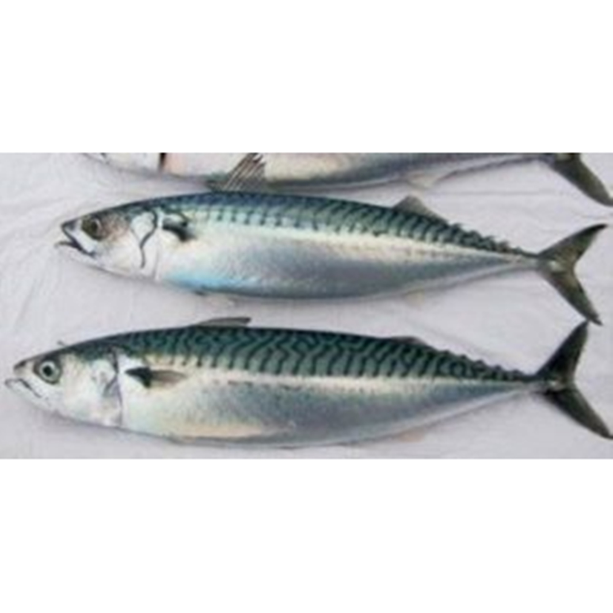

Ikan Sarden
Sarden adalah jenis ikan sehat yang menyediakan banyak manfaat bagi kesehatan. Ikan sarden selain mengandung nutrisi penting juga sangat rendah kalori sehingga menjadi pilihan yang sangat sempurna bagi pelaku diet. Ikan sarden telah dikonsumsi di seluruh negara Eropa dan Amerika Utara selama ratusan tahun. Tetapi kepopuleran ikan ini baru terjadi ketika banyak penelitian yang telah mengungkap manfaat ikan sarden bagi kesehatan.
Ikan sarden juga tergolong ikan yang sangat populer sehingga cukup mudah ditemukan diberbagai supermarket. Ikan sarden kalengan bisa menjadi pilihan yang praktis jika anda tidak ingin repot membuat masakan dari ikan sarden. Tetapi membuat masakan dengan ikan sarden sendiri di rumah tentunya lebih sehat karena tanpa tambahan bahan pengawet.
Kandungan Ikan Sarden (dalam 100 gram)
| Protein (g) | Kalori (Kal) | Lemak (g) | Besi (mg) | Kalsium (mg) | Fosfor (mg) | Vit A (SI) | Vit B1 (mg) | Kolesterol (mg) | BDD (%) |
|---|---|---|---|---|---|---|---|---|---|
| 25 | 207 | 11 | 2,9 | 382 | 451 | 108 | 8,9 | 142 | 100 |
Manfaat Ikan Sarden
- Menjaga keseimbangan kadar gula darah
- Menjaga kestabilan berat badan
- Meningkatkan fungsi mata
- Meningkatkan energi
- Mencegah anemia
Diabetes adalah salah satu penyakit metabolik yang disebabkan tingginya kadar gula darah. Penyakit ini bisa dicegah dengan menerapkan pola hidup sehat seperti memilih makanan sehat seeprti buah dan sayur. Selain keduanya ikan sarden juga diketahui dapat membantu anda terhindar dari penyakit diabetes karena ikan ini mengandung lemak sehat dan protein, dimana kedua nutrisi tersebut bermanfaat dalam memperlambat penyerapan gula ke dalam aliran darah. Mengkombinasikan antara makanan yang mengandung protein tinggi, makanan berlemak (omega-3) seperti ikan sarden, serta karbohidrat kompleks dapat memperlambat penyerapan glukosa (gula) dari karbohidrat ke dalam aliran darah sehingga mengurangi risiko diabetes.
Manfaat ikan sarden memang tidak secara langsung dapat menurunkan berat badan. Tetapi perlu anda ketahui jika mengkonsumsi protein berkualitas tinggi seperti halnya ikan sarden dapat membuat anda kenyang lebih lama sehingga akan mengurangi makan berlebih. Jadi, diet bukan hanya sekedar memotong jumlah kalori, tetapi juga harus mempertimbangkan kebutuhan nutrisi. Sarden juga merupakan sumber protein rendah kalori sehingga bisa menjadi pilihan yang baik bagi mereka yang sedang mencoba untuk menurunkan berat badan.
Salah satu penyakit yang mengancam orang di atas usia 50 tahun adalah degenerasi makula. Penyakit ini ditandai dengan menurunnya fungsi retina sehingga membuat penglihatan menjadi kabur. Studi terbaru menunjukkan bahwa mengkonsumsi ikan yang kaya vitamin A seperti sarden dapat mengurangi risiko penyakit tersebut.
Ikan sarden merupakan makanan sumber zat besi. Yang mana mineral ini memainkan peran penting dalam penyediaan oksigen ke sel-sel darah merah. Proses tersebut pada gilirannya akan membantu tubuh menghasilkan energi yang dibutuhkan. Belum lagi, ikan sarden juga menyediakan vitamin B12, yang mampu meningkatkan energi fisik dan vitalitas secara keseluruhan.
Manfaat ikan sarden yang terakhir adalah mencegah anemia (defisit sel darah merah). Sebagian besar nutrisi yang dibutuhkan untuk membuat sel darah merah dapat ditemukan dalam ikan sarden seperti protein, zat besi dan vitamin B12.